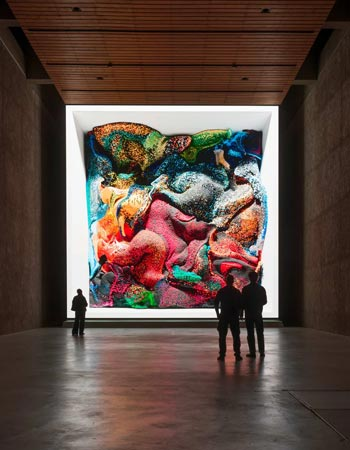

Arte e inteligencia artificial
El trabajo de Refik Anadol propone una nueva forma de entender la inteligencia artificial como una herramienta creativa. En lugar de utilizarla únicamente para resolver problemas técnicos, la emplea para explorar posibilidades estéticas y generar experiencias artísticas innovadoras.
Esta perspectiva plantea preguntas sobre la autoría, la creatividad y el rol de las máquinas en la producción cultural. Sus obras invitan a reflexionar sobre cómo los sistemas inteligentes pueden colaborar en procesos artísticos y ampliar los límites de la imaginación humana.
La memoria como material
Uno de los temas recurrentes en su obra es la memoria, tanto individual como colectiva. A través del uso de datos, Anadol explora cómo los recuerdos pueden representarse, transformarse y reinterpretarse mediante procesos digitales.
Las visualizaciones que produce funcionan como interpretaciones abstractas de la memoria, donde los datos se convierten en paisajes fluidos y cambiantes. Este enfoque permite conectar la tecnología con experiencias humanas profundas, como el recuerdo y la percepción.
Experiencias inmersivas y espacio
Las instalaciones de gran escala son una característica central de su trabajo. Estas obras transforman espacios arquitectónicos en entornos dinámicos donde la luz, el movimiento y el sonido crean una experiencia envolvente.
El espectador deja de ser un observador pasivo para convertirse en parte de la obra. Esta interacción redefine la relación entre el arte y el público, generando una experiencia más participativa y sensorial que trasciende los formatos tradicionales.
